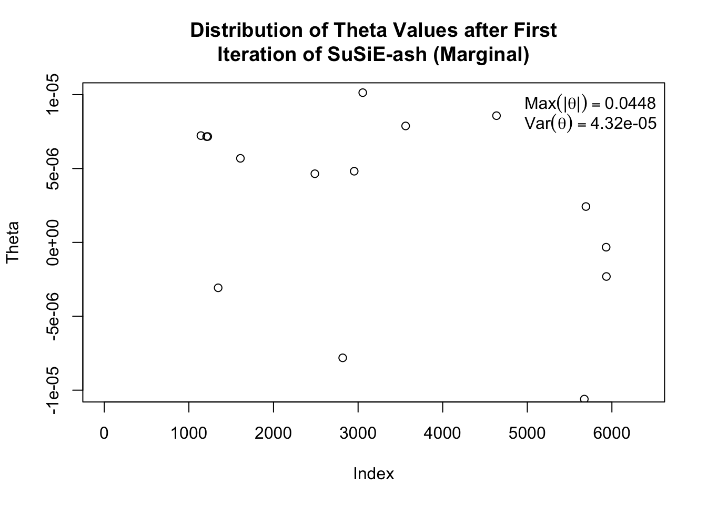

Last updated: 2025-02-26
Checks: 6 1
Knit directory: SuSiE-ASH/
This reproducible R Markdown analysis was created with workflowr (version 1.7.1). The Checks tab describes the reproducibility checks that were applied when the results were created. The Past versions tab lists the development history.
Great! Since the R Markdown file has been committed to the Git repository, you know the exact version of the code that produced these results.
Great job! The global environment was empty. Objects defined in the global environment can affect the analysis in your R Markdown file in unknown ways. For reproduciblity it’s best to always run the code in an empty environment.
The command set.seed(20240328) was run prior to running
the code in the R Markdown file. Setting a seed ensures that any results
that rely on randomness, e.g. subsampling or permutations, are
reproducible.
Great job! Recording the operating system, R version, and package versions is critical for reproducibility.
Nice! There were no cached chunks for this analysis, so you can be confident that you successfully produced the results during this run.
Using absolute paths to the files within your workflowr project makes it difficult for you and others to run your code on a different machine. Change the absolute path(s) below to the suggested relative path(s) to make your code more reproducible.
| absolute | relative |
|---|---|
| /Users/alexmccreight/Columbia/Research/SuSiE-ASH/SuSiE-ASH/code/susie_versions/SuSiE_Ash_Marginal.R | code/susie_versions/SuSiE_Ash_Marginal.R |
| /Users/alexmccreight/Columbia/Research/SuSiE-ASH/SuSiE-ASH/new-rcpp/mr.ash.alpha | new-rcpp/mr.ash.alpha |
| /Users/alexmccreight/Columbia/Research/SuSiE-ASH/SuSiE-ASH/submodules/susieR | submodules/susieR |
| /Users/alexmccreight/Columbia/Research/SuSiE-ASH/SuSiE-ASH/vignettes/precomputed_matrices.rds | vignettes/precomputed_matrices.rds |
| /Users/alexmccreight/Columbia/Research/SuSiE-ASH/SuSiE-ASH/X_subset | X_subset |
Great! You are using Git for version control. Tracking code development and connecting the code version to the results is critical for reproducibility.
The results in this page were generated with repository version 105e516. See the Past versions tab to see a history of the changes made to the R Markdown and HTML files.
Note that you need to be careful to ensure that all relevant files for
the analysis have been committed to Git prior to generating the results
(you can use wflow_publish or
wflow_git_commit). workflowr only checks the R Markdown
file, but you know if there are other scripts or data files that it
depends on. Below is the status of the Git repository when the results
were generated:
Ignored files:
Ignored: .DS_Store
Ignored: .Rapp.history
Ignored: .Rhistory
Ignored: .Rproj.user/
Ignored: analysis/.DS_Store
Ignored: code/.DS_Store
Ignored: code/susie_versions/.DS_Store
Ignored: data/.DS_Store
Ignored: manuscript_scripts/
Ignored: new-rcpp/.DS_Store
Ignored: new-rcpp/matrix.multiplication/.DS_Store
Ignored: new-rcpp/matrix.multiplication/.Rapp.history
Ignored: new-rcpp/mr.ash.alpha/.DS_Store
Ignored: new-rcpp/mr.ash.alpha/.Rbuildignore
Ignored: new-rcpp/mr.ash.alpha/R/.DS_Store
Ignored: new-rcpp/mr.ash.alpha/src/.DS_Store
Ignored: new-rcpp/mr.ash.alpha/src/RcppExports.o
Ignored: new-rcpp/mr.ash.alpha/src/caisa_rcpp.o
Ignored: new-rcpp/mr.ash.alpha/src/mr.ash.alpha.so
Ignored: scripts/.DS_Store
Ignored: scripts/Old Scripts/.DS_Store
Ignored: simulation/.DS_Store
Ignored: simulation/misc/.DS_Store
Ignored: submodules/.DS_Store
Untracked files:
Untracked: X_subset
Untracked: analysis/1-28-2025.Rmd
Untracked: analysis/1-5-2025.Rmd
Untracked: analysis/ConservativeSparseSim_numIter100_h20.3_L20_K10.rds
Untracked: analysis/FineboostnumIter100_h2total0.15_h2sentinel0.7_numOligogenic20_pvethreshold0.005_mixturesmall0.75_nullMax0.015.rds
Untracked: analysis/FineboostnumIter100_h2total0.15_h2sentinel0.7_numOligogenic20_pvethreshold0.005_mixturesmall0.75_nullMax0.05.rds
Untracked: analysis/FineboostnumIter2_h2total0.3_h2sentinel0.7_numOligogenic20_pvethreshold0.005_mixturesmall0.75_nullMax0.02.rds
Untracked: analysis/FineboostnumIter5_h2total0.3_h2sentinel0.7_numOligogenic20_pvethreshold0.005_mixturesmall0.75_nullMax0.02.rds
Untracked: analysis/MarginalSparseSim_numIter10_h20.3_L20_K10_Length20_UB2.rds
Untracked: analysis/MarginalSparseSim_numIter10_h20.4_L20_K10_Length20_UB2.rds
Untracked: analysis/MarginalSparseSim_numIter2_h20.3_L20_K10.rds
Untracked: analysis/MarginalnumIter1_h2total0.3_h2sentinel0.7_L10_numOligogenic20_pvethreshold0.005_mixturesmall0.75_length20_UB2.rds
Untracked: analysis/New Simulation Results.Rmd
Untracked: analysis/New results.Rmd
Untracked: analysis/Sparse-Iteration-Analysis.Rmd
Untracked: analysis/Sparse-Results.Rmd
Untracked: analysis/SparseSim_numIter100_h20.3_L20_K10.rds
Untracked: analysis/SparseSim_numIter100_h20.4_L10_K5.rds
Untracked: analysis/SparseSim_numIter2_h20.3_L10_K10.rds
Untracked: analysis/SparseSim_numIter2_h20.3_L10_K5.rds
Untracked: analysis/SparseSim_numIter2_h20.3_L20_K10.rds
Untracked: analysis/computational speed.Rmd
Untracked: analysis/experiments.Rmd
Untracked: analysis/numIter2_h2total0.3_h2sentinel0.7_L10_numOligogenic20_pvethreshold0.005_mixturesmall0.25_K10_upperBound3.rds
Untracked: analysis/numIter2_h2total0.3_h2sentinel0.7_L10_numOligogenic20_pvethreshold0.005_mixturesmall0.4_K10_upperBound1.rds
Untracked: analysis/numIter2_h2total0.3_h2sentinel0.7_L10_numOligogenic20_pvethreshold0.005_mixturesmall0.4_K10_upperBound2.rds
Untracked: analysis/numIter2_h2total0.3_h2sentinel0.7_L10_numOligogenic20_pvethreshold0.005_mixturesmall0.4_K7_upperBound3.5.rds
Untracked: analysis/numIter2_h2total0.3_h2sentinel0.7_L10_numOligogenic20_pvethreshold0.005_mixturesmall0.75_length5_UB1.rds
Untracked: analysis/numIter2_h2total0.3_h2sentinel0.7_L10_numOligogenic20_vthreshold0.005_pvethreshold0.005
Untracked: analysis/numIter2_h2total0.3_h2sentinel0.7_L10_numOligogenic20_vthreshold0.005_pvethreshold0.005_u0.8_p3
Untracked: analysis/numIter2_h2total0.3_h2sentinel0.7_L10_numOligogenic20_vthreshold0.005_pvethreshold0.005_u1_p1
Untracked: analysis/numIter2_h2total0.3_h2sentinel0.7_L10_pvethreshold0.001_K10_upperBound3.5.rds
Untracked: analysis/vignette_iteration_analysis_1.Rmd
Untracked: code/Tmp.Rmd
Untracked: misc/
Untracked: overleaf_graphics/
Untracked: preprint/KISS-paper.Rmd
Untracked: scripts/LD_blocks/
Untracked: scripts/commands_to_submit_eqtl_simple.R
Untracked: scripts/eqtl_simulation_marginal.R
Untracked: scripts/eqtl_simulation_simple.R
Untracked: scripts/eqtl_simulation_v2.R
Untracked: scripts/fineboost/
Untracked: scripts/sparse_blip.R
Untracked: scripts/sparse_eqtl_simulation_marginal.R
Untracked: scripts/sparse_eqtl_simulation_simple.R
Untracked: scripts/susie_ash_mod/
Untracked: seed1_data.rds
Untracked: simulation/MarginalnumIter100_h2total0.3_h2sentinel0.7_L20_numOligogenic20_pvethreshold0.005_mixturesmall0.75_length5_UB1.rds
Untracked: simulation/eqtl-results/
Untracked: simulation/misc/Rcpp-Comparison.R
Untracked: simulation/misc/RcppTesting.Rmd
Untracked: simulation/misc/inf_debugging.Rmd
Untracked: simulation/misc/learner.Rmd
Untracked: simulation/misc/sim_analysis.Rmd
Untracked: simulation/misc/sim_debugging.Rmd
Untracked: simulation/misc/sim_download.Rmd
Untracked: simulation/sparse-results/
Untracked: simulation/src/bind_mount.sh
Untracked: simulation/src/host_init.sh
Untracked: simulation/src/mm_batch.sh
Untracked: simulation/src/mm_interactive.sh
Untracked: testing.Rmd
Untracked: tmp.Rmd
Untracked: tmp.cpp
Untracked: tmp.nb.html
Untracked: tmp_files/
Untracked: vignettes/
Unstaged changes:
Modified: analysis/Simulation-Results-Tmp.Rmd
Modified: analysis/_site.yml
Deleted: analysis/tmp-vignette.Rmd
Modified: code/susie_versions/SuSiE_Ash_Marginal.R
Modified: code/susie_versions/susie_ash_mod.R
Modified: code/susie_versions/susie_inf.R
Deleted: scripts/LD_blocks_precomputations.R
Deleted: scripts/comannds_to_submit_LD.R
Deleted: scripts/commands_to_submit_LD_precomputations.R
Deleted: scripts/commands_to_submit_ash_mod.R
Modified: scripts/commands_to_submit_eqtl.R
Deleted: scripts/eqtl_ash_mod.R
Deleted: scripts/eqtl_ash_mod_default_grid.R
Modified: scripts/eqtl_simulation.R
Deleted: scripts/process_ld_block.R
Modified: scripts/sparse/commands_to_submit_sparse.R
Modified: simulation/LD_blocks.sh
Modified: simulation/commands_to_submit.txt
Modified: simulation/eqtl_sim.sh
Modified: simulation/identification.Rmd
Modified: simulation/sparse_eqtl_sim.sh
Modified: simulation/src/mm_jobman.sh
Modified: submodules/VEB.Boost
Modified: submodules/pecotmr
Note that any generated files, e.g. HTML, png, CSS, etc., are not included in this status report because it is ok for generated content to have uncommitted changes.
These are the previous versions of the repository in which changes were
made to the R Markdown (analysis/vignette_ash_failure.Rmd)
and HTML (docs/vignette_ash_failure.html) files. If you’ve
configured a remote Git repository (see ?wflow_git_remote),
click on the hyperlinks in the table below to view the files as they
were in that past version.
| File | Version | Author | Date | Message |
|---|---|---|---|---|
| html | 105e516 | alexmccreight | 2025-02-26 | Build site. |
| Rmd | ac52358 | alexmccreight | 2025-02-26 | workflowr::wflow_publish(files = "analysis/vignette_ash_failure.rmd") |
This vignette demonstrates an issue where our SuSiE.ash (Marginal) model fails to update its coefficients after the first iteration of SuSiE. In this simulation, we generate an oligogenic data setting and run the following steps:
Run a single iteration of SuSiE.
Extract the residuals.
Perform univariate regression on the residuals and compute & plot the z-scores to demonstrate there are signals SuSiE missed in the first iteration.
Continue on with the SuSiE.ash (Marginal) algorithm, specifically showcasing how the mr.ash component misses all signals.
# Generate Data
data <- generate_eqtl_data(X = X20, h2_total = 0.3, mixture_props = c(0.75, 0.25), seed = 1)
data$causal <- is_causal(data, 0.005)
# Run single iteration of SuSiE
res_susie <- susie(X = data$ori.X, y = data$ori.y, L = 10, max_iter = 1, standardize = T, intercept = T)
# Extract Intercept + Coefficients
coefs <- coef(res_susie)
intercept_hat <- coefs[1]
beta_hat <- coefs[-1]
# Calculate Residuals
resid <- data$ori.y - (intercept_hat + data$ori.X %*% beta_hat)
# Run univariate regression on residuals + calculate z-scores
res_reg <- univariate_regression(X = data$ori.X, y = resid, center = F, scale = F)
z_scores <- res_reg$betahat / res_reg$sebetahat
# Calculate p-value + bonferroni adjustment
pvals <- 2 * pnorm(abs(z_scores), lower.tail = FALSE)
pvals_bonf <- p.adjust(pvals, method = "bonferroni")
sig_idx <- which(pvals_bonf < 0.05) # no variants meet threshold
alpha_bonf <- 0.05 / length(pvals_bonf)
z_thresh <- qnorm(1 - alpha_bonf / 2)
highlight_idx <- c(data$oligogenic_indices)
# Plot z-scores, highlight oligogenic indices, and include bonferonni threshold
plot(z_scores, main = "Univariate z-scores on the residuals\nPurple points denote oligogenic variants", ylab = "z-score", ylim = c(-5,5))
abline(h = z_thresh, col = "red", lty = 2)
abline(h = -z_thresh, col = "red", lty = 2)
points(highlight_idx, z_scores[highlight_idx], col = "purple", pch = 19)
| Version | Author | Date |
|---|---|---|
| 105e516 | alexmccreight | 2025-02-26 |
After the first iteration of SuSiE, none of the z-scores surpasses the Bonferroni threshold, although many variants (particularly oligogenic variants) come close. This suggests that there should still be a sufficient signals remaining in after the first iteration of SuSiE for the mr.ash component to capture.
# Compute the desired values
max_theta <- max(abs(res_marg$theta))
var_theta <- var(res_marg$theta)
plot(res_marg$theta, ylim = c(-1e-5, 1e-5),
main = "Distribution of Theta Values after First\nIteration of SuSiE-ash (Marginal)",
ylab = "Theta")
legend("topright",
legend = c(
bquote(Max("|" * bold(theta) * "|") == .(format(max_theta, digits = 3))),
bquote(Var(bold(theta)) == .(format(var_theta, digits = 3)))
),
bty = "n")
| Version | Author | Date |
|---|---|---|
| 105e516 | alexmccreight | 2025-02-26 |
The mr.ash coefficient values, theta, are very small–essentially negligible–despite there being sufficient signals after the first SuSiE iteration.
sessionInfo()R version 4.4.2 (2024-10-31)
Platform: aarch64-apple-darwin20
Running under: macOS Sonoma 14.1
Matrix products: default
BLAS: /Library/Frameworks/R.framework/Versions/4.4-arm64/Resources/lib/libRblas.0.dylib
LAPACK: /Library/Frameworks/R.framework/Versions/4.4-arm64/Resources/lib/libRlapack.dylib; LAPACK version 3.12.0
locale:
[1] en_US.UTF-8/en_US.UTF-8/en_US.UTF-8/C/en_US.UTF-8/en_US.UTF-8
time zone: America/New_York
tzcode source: internal
attached base packages:
[1] parallel stats graphics grDevices utils datasets methods
[8] base
other attached packages:
[1] susieR_0.14.4 testthat_3.2.3 mr.ash.alpha_0.1-43
[4] RcppEigen_0.3.4.0.2 RcppArmadillo_14.2.3-1 Rcpp_1.0.14
[7] lubridate_1.9.4 forcats_1.0.0 stringr_1.5.1
[10] dplyr_1.1.4 purrr_1.0.4 readr_2.1.5
[13] tidyr_1.3.1 tibble_3.2.1 ggplot2_3.5.1
[16] tidyverse_2.0.0 workflowr_1.7.1
loaded via a namespace (and not attached):
[1] tidyselect_1.2.1 fastmap_1.2.0 reshape_0.8.9
[4] promises_1.3.2 digest_0.6.37 timechange_0.3.0
[7] mime_0.12 lifecycle_1.0.4 ellipsis_0.3.2
[10] processx_3.8.5 magrittr_2.0.3 compiler_4.4.2
[13] rlang_1.1.5 sass_0.4.9 tools_4.4.2
[16] yaml_2.3.10 knitr_1.49 htmlwidgets_1.6.4
[19] pkgbuild_1.4.6 plyr_1.8.9 pkgload_1.4.0
[22] miniUI_0.1.1.1 withr_3.0.2 desc_1.4.3
[25] grid_4.4.2 urlchecker_1.0.1 git2r_0.35.0
[28] profvis_0.4.0 xtable_1.8-4 colorspace_2.1-1
[31] scales_1.3.0 cli_3.6.4 rmarkdown_2.29
[34] crayon_1.5.3 generics_0.1.3 remotes_2.5.0
[37] RcppParallel_5.1.10 rstudioapi_0.17.1 httr_1.4.7
[40] tzdb_0.4.0 sessioninfo_1.2.3 cachem_1.1.0
[43] matrixStats_1.5.0 vctrs_0.6.5 devtools_2.4.5
[46] Matrix_1.7-1 jsonlite_1.8.9 callr_3.7.6
[49] hms_1.1.3 mixsqp_0.3-54 irlba_2.3.5.1
[52] jquerylib_0.1.4 glue_1.8.0 ps_1.8.1
[55] stringi_1.8.4 gtable_0.3.6 later_1.4.1
[58] RcppZiggurat_0.1.6 munsell_0.5.1 pillar_1.10.1
[61] htmltools_0.5.8.1 brio_1.1.5 R6_2.6.1
[64] rprojroot_2.0.4 evaluate_1.0.3 shiny_1.10.0
[67] lattice_0.22-6 Rfast_2.1.4 memoise_2.0.1
[70] httpuv_1.6.15 bslib_0.9.0 whisker_0.4.1
[73] xfun_0.50 fs_1.6.5 usethis_3.1.0
[76] getPass_0.2-4 pkgconfig_2.0.3